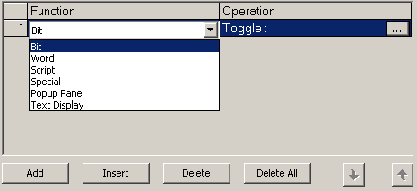
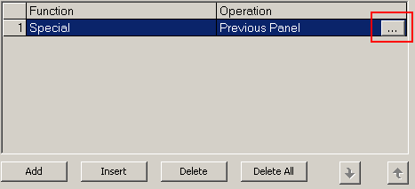
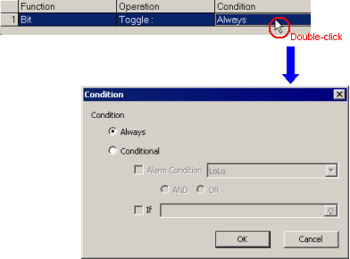
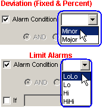
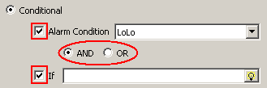

|
|
|
|
|
|
|
|
There are two ways you can add touch actions.
Alarm Group. When an alarm in the alarm summary is touched, actions set up in the alarm group or diagnostic alarm group run.
Variable. When a specific alarm in the alarm summary is touched, actions set up in the variable run.
Right-click the alarm group node to display its properties.
In the Touch Action property, click the ellipsis to display the Alarm Touch Actions dialog box.
Click Add to add an action.

There is no Condition setting for touch actions set up on alarm groups and diagnostic alarm groups.
Click the action's Function cell and select a function from the list.

Click the Operation cell to display the ellipsis, then click the ellipsis to define the operation details.
Depending on the selected function, a dialog box appears allowing you to configure the operation.

|
Bit |
|
|
Word |
Source
|
|
Script |
The script written in this dialog window will run when the alarm is touched. For more information on scripts, see Chapter 18, Scripts. |
|
Special |
Run one of these operations:
|
|
Popup Panel |
Define the popup window settings. For more information on popup window panels, see Chapter 15, Popup Windows. |
|
Text Display |
The Text Display function displays a text file when an alarm is touched. To specify the text display for each alarm, you can define variables that specify the File Number, Block Number, and Row Number.
For more information on Text Display, see Section 11.7, Displaying Text Files. |
Repeat Steps 3 to 5 to add more operations to Alarm Touch Actions as required.

You can add up to 32 actions.

When you add multiple alarm operations they run in the order they appear in the dialog box.
Previous Panel, Restart Runtime, Exit Runtime, Configuration, and Change Panel operations execute after all other actions have executed.
Reset the order or operations by using the up and down arrows in the Alarm Touch Actions dialog box.
Click OK to close the Alarm Touch Action dialog box.
In the Variable Editor, double-click the variable's row number to display the Variable Properties dialog box.
Click the Alarm tab and select the Alarm checkbox to enable the alarm.
Click the Touch Action button to display the Alarm Touch Actions dialog box.
Click Add to add an action.
Click the action's Function cell and select a function from the list.

Click the Operation cell to display the ellipsis, then click the ellipsis to define the operation details.
Depending on the selected function, a dialog box appears allowing you to configure the operation.

For more information on the Operations for each Function, see Operations in step 5 of the Alarm Group section.
Click the Condition cell to display the ellipsis, then click the ellipsis to display the Condition dialog box.

|
Always |
Runs the operation whenever the alarm message is touched. |
|||||||||
|
Conditional |
When the alarm message is touched, the operation runs only if the defined conditions are met. There are two types of conditions: Alarm conditions and Conditional expressions. |
|||||||||
|
Alarm Condition |
Only available when the variable is an integer or REAL. Set the Alarm Condition to LoLo, Lo, Hi, HiHi for Limit alarms, or Minor, Major for Deviation alarms.  For information on these conditions, see Section 16.3.3, Word Alarms. |
|||||||||
|
If |
The operation runs only if the specified BOOL or integer variable or expression is true.
The following table shows each data type and its True and False values.
|
|||||||||
|
AND/OR |
The AND/OR option is only available for Integer and REAL variables and when both the Alarm Condition and the If check boxes are selected. By using this setting, you can set whether both the Alarm and If conditions have to be true, or if just one of the conditions have to be true, before the alarm operation is run. 
|
|||||||||
Repeat Steps 4 to 7 to add more operations to Alarm Touch Actions as required.

You can add up to 32 actions.

When you add multiple alarm operations they run in the order they appear in the dialog box.
Previous Panel, Restart Runtime, Exit Runtime, Configuration, and Change Panel operations execute after all other actions have executed.
Reset the order or operations by using the up and down arrows in the Alarm Touch Actions dialog box.
Click OK to close the Alarm Touch Action dialog box.